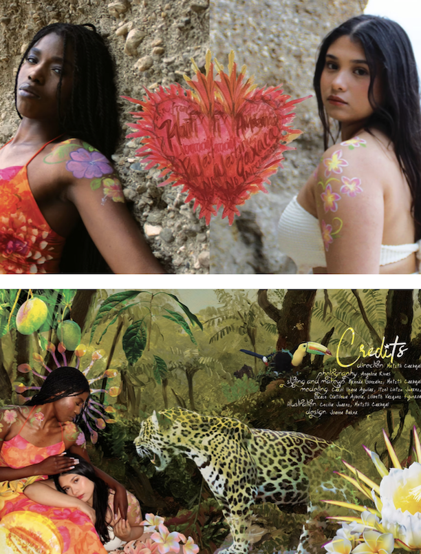

About
Angelina Rivas
Angelina Rivas received her Bachelor of Arts with Honors in International Relations from Stanford University. She is currently an M.A. Candidate in Sociology. Outside of academics she enjoys reading, photography, and spending time with family.
Interests
Project interests
- AI in local government
- Impact of AI in Societies
- Who AI Benefits Most and Least
Past Projects
Academic Projects
Research projects focused on sustainable development, transitional justice, and international conflicts.
Non-Academic work
Tierra Mía
